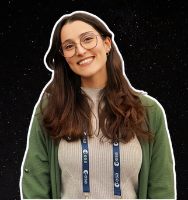

Sou uma Engenheira Biológica com uma paixão gigante pela física e pela biologia. Depois de me formar em Engenharia Biológica pelo Instituto Superior Técnico, mergulhei no mundo da investigação, explorando os caminhos da imunologia e da oncobiologia no Instituto de Medicina Molecular e na Fundação Champalimaud. Em 2023, decidi mudar de carreira e seguir uma outra paixão: a comunicação de ciência. Hoje, sou editora pela EJR-Quartz para a Agência Espacial Europeia (ESA), onde partilho as maravilhas de aliar a Inteligência Artificial à Observação da Terra.
Para ti, o que é a astrobiologia?
Astrobiologia é a junção de dois mundos de dimensões muito diferentes: é a busca por formas de vida minúsculas e 'invisíveis' numa tela tão vasta quanto o próprio universo. Lembra-nos que várias formas de vida podem estar à espreita numa lua distante e gelada ou num exoplaneta que ainda não conhecemos. E acho que concretiza uma ideia muito bonita de nos conectarmos a algo maior do que nós, ao olhar para o muito, muito pequeno.
Porque decidiste dedicar-te à comunicação de ciência?
Estar num laboratório e contribuir para novas descobertas é uma experiência incrível. Mas, ao longo do tempo, percebi que a minha paixão não era só fazer ciência, era também partilhá-la. Senti uma necessidade genuína de traduzir o conhecimento científico complexo e torná-lo acessível a todos. Acredito que a ciência não deve viver isolada nos laboratórios: tem que ser partilhada de forma clara para que as pessoas possam fazer escolhas mais informadas e conscientes.
Como achas que é a perceção pública sobre ciências do espaço atualmente?
Acho fascinante a dualidade do público! Por um lado, há uma enorme curiosidade e entusiasmo por missões espaciais ou os programas da ESA e da NASA. A ideia de exploração de novos (exo)planetas ou encontrarmos novas formas de vida continua a ser um sonho que nos une. Por outro, há também uma perceção de que a ciência do espaço é algo distante, que acontece lá fora e não nos afeta diretamente. Muitos veem-na como um luxo ou algo apenas para cientistas e bilionários. O meu trabalho é uma forma de quebrar essa barreira. Mostrar que o espaço não é só sobre ir para a Lua ou Marte, mas sobre olhar para o nosso próprio planeta.
Que conselho dás aos futuros astrobiólogos portugueses?
Acho que devem construir uma base sólida e, ao mesmo tempo, ser interdisciplinares. A astrobiologia é uma área que exige que falem as "línguas" de diferentes campos científicos. Além disso, desenvolvam competências extra, especialmente ao nível da comunicação de ciência! Comunicar ciência de forma clara e cativante não só vos distingue, como vos abre portas para carreiras fora da academia.
Que 3 objetos levavas para uma ilha deserta?
Um filtro portátil para purificação de água, um canivete suiço, e um caderno com lápis.